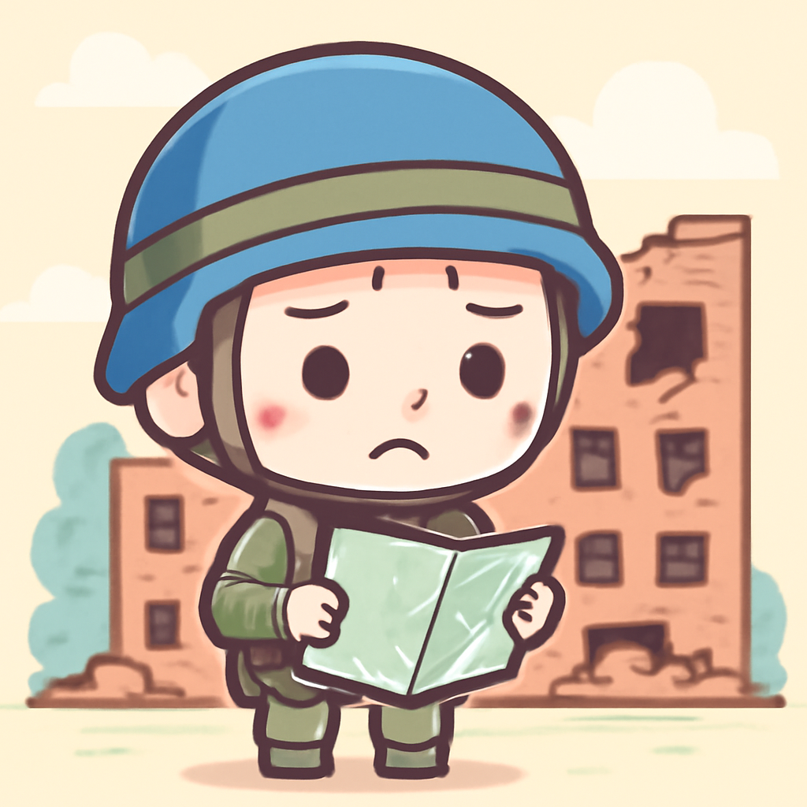
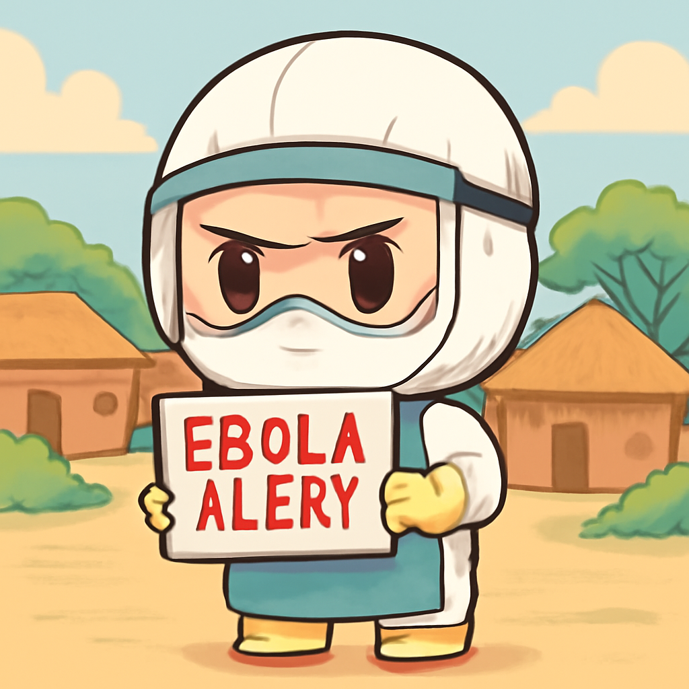

其一 · 烏克蘭 · 俄羅斯指控烏克蘭攻擊學生宿舍
俄羅斯指控烏克蘭襲擊學生宿舍，緊張局勢加劇。

在烏克蘭東部的莫斯科佔領區，俄羅斯指控烏克蘭對一所學生宿舍發動攻擊，導致數名學生受傷。普京誓言將進行報復，該事件可能加劇兩國之間的緊張關係，並引發國際社會的關注。面對不斷升高的緊張局勢，大家不禁想問：和平到底何時才能如期而至？
🔗 原始新聞 ↗
2026-05-23 · 以古觀今，以笑抗愁
俄羅斯指控烏克蘭襲擊學生宿舍，緊張局勢加劇。

在烏克蘭東部的莫斯科佔領區，俄羅斯指控烏克蘭對一所學生宿舍發動攻擊，導致數名學生受傷。普京誓言將進行報復，該事件可能加劇兩國之間的緊張關係，並引發國際社會的關注。面對不斷升高的緊張局勢，大家不禁想問：和平到底何時才能如期而至？
🔗 原始新聞 ↗
阿爾伯塔省計劃舉行分離公投，引發爭議。
阿爾伯塔省宣布將舉行一場有關分離的公投，這一消息引發了廣泛的批評，甚至連分離主義者都認為問題設定不夠明確。此舉似乎是對聯邦政府不滿的表達，未來將如何影響加拿大的政治版圖，還需拭目以待。政治如同天氣，時常變幻莫測。
🔗 原始新聞 ↗
英國報告顯示仇恨犯罪上升，背後原因複雜。
最近的報告指出，英國的仇恨犯罪，包括反穆斯林和反猶太罪行，因在線虛假信息和全球不穩定而上升。專家們呼籲加強社會凝聚力與理解，否則可能會引發更大的社會問題。網路的力量就像是雙刃劍，能夠連接也能夠傷害。
🔗 原始新聞 ↗
剛果埃博拉疫情風險上升，需引起重視。

聯合國衛生組織宣布，剛果民主共和國的埃博拉風險已提高至非常高，儘管全球風險仍然低。這一消息提醒我們，疫情的威脅依然存在，尤其在衝突與貧窮交織的地區，情況更為嚴峻。面對這樣的挑戰，全球需攜手抗疫。
🔗 原始新聞 ↗
南非面臨埃博拉風險，當地情勢堪憂。
南非的Akobo地區因饑荒和衝突而面臨埃博拉爆發的潛在風險。當地居民的生活困境引發了對疫情擴散的擔憂，專家指出這可能帶來毀滅性的影響。這告訴我們，健康與和平息息相關，缺一不可。
🔗 原始新聞 ↗